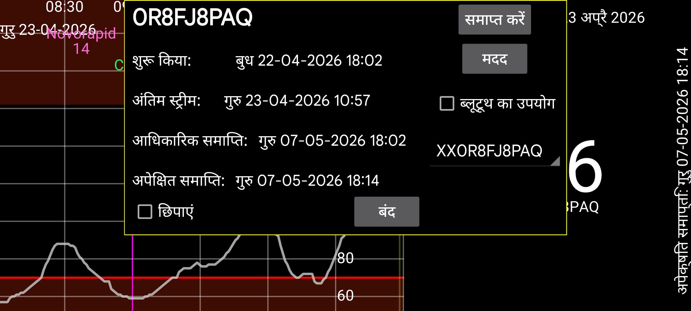

जब Juggluco स्ट्रीम मानों के मिरर के रूप में कार्य करता है तो सेंसरों के बारे में जानकारी देता है:
शुरू किया: सेंसर कब शुरू किया गया था। Libre सेंसरों पर यह पहले ग्लूकोज मानों से एक घंटा पहले होता है।
अंतिम स्कैन: सेंसर को अंतिम बार कब स्कैन किया गया था। जब सेंसर एक सेंसर त्रुटि या सेंसर बदलें त्रुटि के कारण डेटा प्राप्त किए बिना स्कैन किया जाता है, तब भी इसे स्कैन किया गया गिना जाता है।
अंतिम स्ट्रीम: ब्लूटूथ के माध्यम से प्राप्त नवीनतम ग्लूकोज मापन का टाइमस्टैम्प;
आधिकारिक समाप्ति: सेंसर निर्माता द्वारा कहा गया अंत समय।
अपेक्षित समाप्ति: कुछ सेंसर वास्तव में आधिकारिक अंत समय से अधिक समय तक चलते हैं। Libre 1 और 2 और Dexcom G7/ONE+ 12 घंटे अधिक चलते हैं, Sibionics सेंसर लगभग 10 दिन अधिक चलते हैं। केवल Libre 3 सेंसर अपने आधिकारिक अंत समय से अधिक नहीं चलते।
छिपाएं: चेक करने पर इस वक्र को छिपाएं। अनचेक करने के अलावा, आप स्क्रीन के निचले दाएं कोने में “दिखाएं” दबाकर भी वक्र को फिर से दृश्यमान बना सकते हैं।
समाप्त करें: इस सेंसर से ब्लूटूथ के माध्यम से ग्लूकोज मान प्राप्त करना बंद करें। जब आप इसे फिर से उपयोग करना चाहते हैं, तो आपको सेंसर को फिर से स्कैन करना होगा।
ब्लूटूथ का उपयोग: इस डिवाइस को ब्लूटूथ के माध्यम से सीधे सेंसरों से कनेक्ट करें। आप इसका उपयोग यह बदलने के लिए कर सकते हैं कि कौन सा डिवाइस सीधे सेंसरों से कनेक्ट होता है। इसे उस अन्य डिवाइस में बंद होना चाहिए जो पहले सीधे सेंसर से जुड़ा था। आपको दोनों डिवाइसों पर मिरर सेटिंग्स भी बदलनी होंगी ताकि स्ट्रीम मान विपरीत दिशा में भेजे जाएं। जब दूसरा पक्ष एक WearOS घड़ी है, तो आप यह एक ही बटन से कर सकते हैं: बायां मेन्यू→घड़ी→WearOS config→”सीधा सेंसर-घड़ी कनेक्शन”।
कई सेंसरों का उपयोग करते समय, आप चुन सकते हैं कि किस सेंसर के लिए जानकारी देखनी है।
कैलिब्रेशन: यदि आपने बायां मेन्यू→सेटिंग्स→कैलिब्रेशन में रक्त ग्लूकोज लेबल निर्दिष्ट किया है और बायां मध्य मेन्यू→नई मात्रा के साथ रक्त ग्लूकोज मापन दर्ज किए हैं, जो बाहर नहीं रखे गए थे, तो आप किए गए कैलिब्रेशनों की सूची प्राप्त करने के लिए “कैलिब्रेशन” बटन दबा सकते हैं। देखें: https://www.juggluco.nl/Juggluco/index.html#calibration
वार्मअप: Sibionics और Linx/Aidex X सेंसरों के लिए आप वार्मअप अवधि के मिनटों की संख्या बदल सकते हैं। सभी फंक्शन वार्मअप अवधि के दौरान डेटा को अनदेखा करेंगे: स्क्रीन पर वक्र, आंकड़े, एक्सपोर्ट किया गया डेटा और वेब सर्वर में दिखाई देने वाला डेटा। साथ ही, पिछले समय के लिए भी।